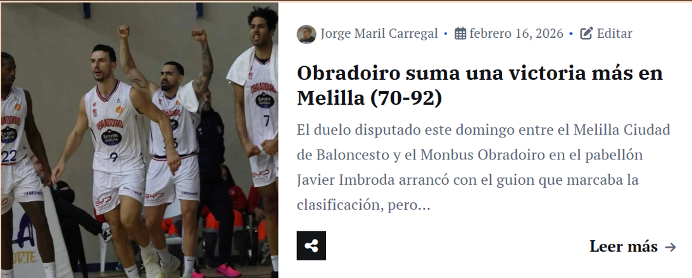
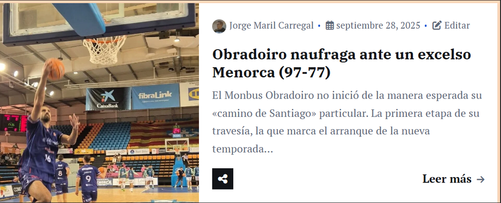
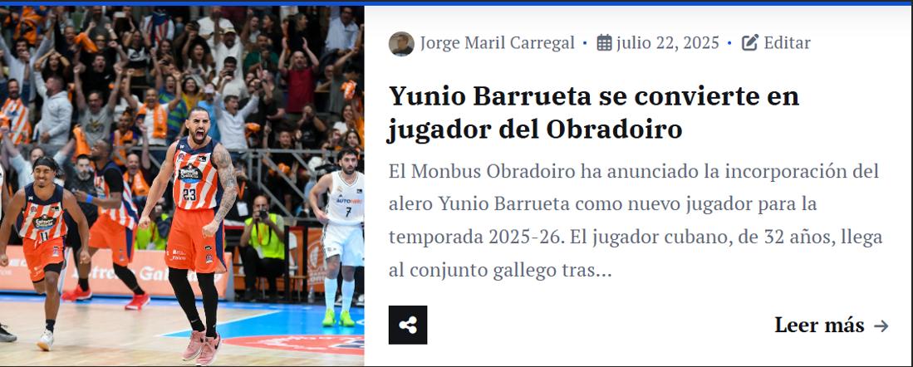
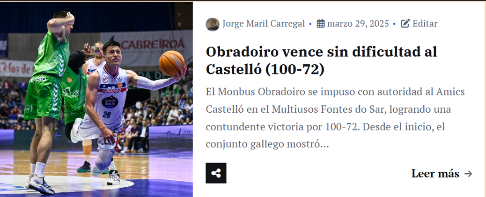
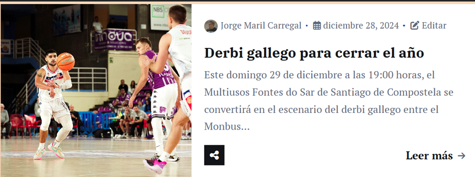

Mis reportajes y noticias
-

Obradoiro suma una victoria más en Melilla (70-92)Primera FEB
-

J1: Obradoiro naufraga ante un excelso Menorca (97-77)Primera FEB
-

Yunio Barrueta se convierte en jugador del ObradoiroPrimera FEB
-

Obradoiro vence sin dificultad al Castelló (100-72)Primera FEB
-

Derbi gallego para cerrar el añoPrevia Primera FEB